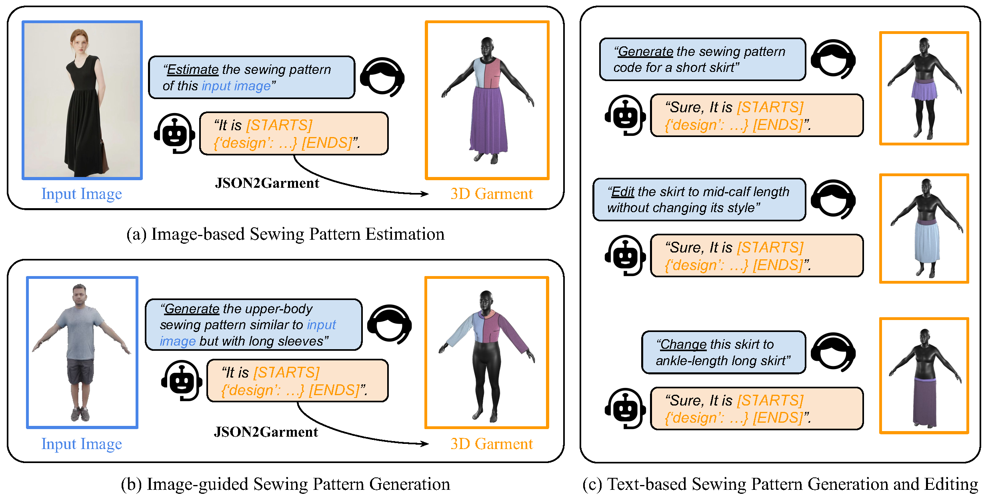
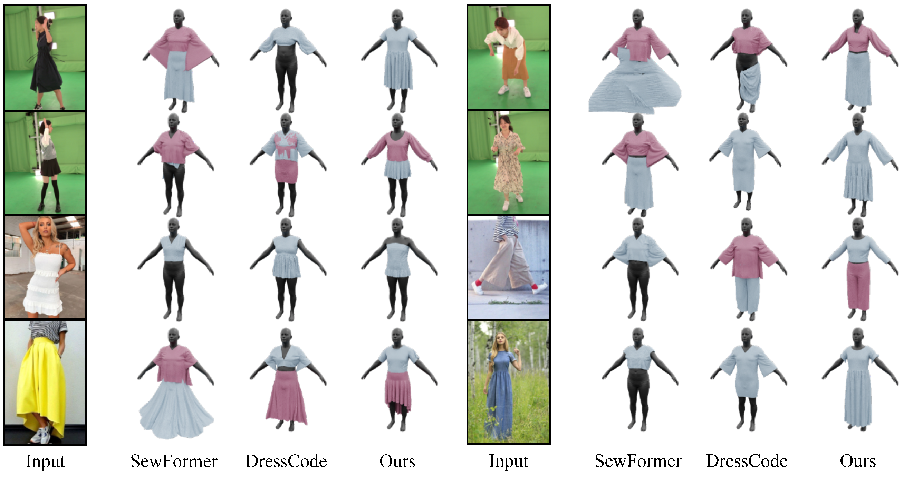
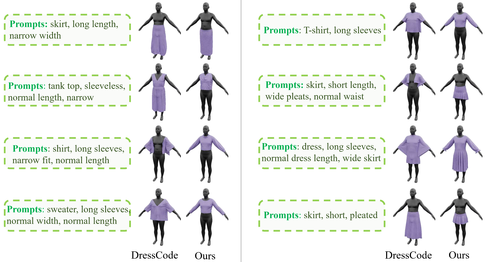

We introduce ChatGarment, a novel approach that leverages large vision-language models (VLMs) to automate the estimation, generation, and editing of 3D garments from images or text descriptions.
Unlike previous methods that struggle in real-world scenarios or lack interactive editing capabilities, ChatGarment can estimate sewing patterns from in-the-wild images or sketches, generate them from text descriptions, and edit garments based on user instructions, all within an interactive dialogue. These sewing patterns can then be draped into 3D garments, which are easily animatable and simulatable. This is achieved by finetuning a VLM to directly generate a JSON file that includes both textual descriptions of garment types and styles, as well as continuous numerical attributes. This JSON file is then used to create sewing patterns through a programming parametric model. To support this, we refine the existing programming model, GarmentCode, by expanding its garment type coverage and simplifying its structure for efficient VLM fine-tuning. Additionally, we construct a large-scale dataset of image-to-sewing-pattern and text-to-sewing-pattern pairs through an automated data pipeline.
Extensive evaluations demonstrate ChatGarment's ability to accurately reconstruct, generate, and edit garments from multimodal inputs, highlighting its potential to revolutionize workflows in fashion and gaming applications.

We utilize the large vision-language model for sewing pattern understanding. ChatGarment features three dialog modes. Users can utilize images as visual inputs for garment creation or guidance, while text instructions define specific tasks. These inputs are transformed into GarmentCode, which is then converted to 3D garments.

Results of image-based reconstruction. Unlike previous methods (SewFormer, DressCode, GarmentRecovery, and GPT-4o-based method) which often mess up or miss the garments. ChatGarment could faithfully capture the shape, style and the composition of the target garments.

Results of garment generation from texts. ChatGarment follows the instruction more accurately, generating more precise details (types, sleeves, length, etc.) compared to DressCode.
Results of garment editing. The models need to edit the source garment according to the given editing instructions in the prompt boxes. ChatGarment accurately modifies the targeted garment part according to the input prompt. In contrast, methods based on SewFormer or DressCode often fail to precisely follow the prompt instructions and alter other untouched areas of the garment.
Results of Rule-based Simulation Control. We apply our rule-based method to estimate the simulation parameters corresponding to the input images. This approach also allows control over different physical deformation behaviors, such as those of soft materials like silk (Stiffness↓) and rigid materials like denim (Stiffness↑).
GarmentCode - A domain-specific language (DSL) designed for creating parametric sewing patterns.
ChatPose - Leverages Large Language Models (LLMs) to understand and reason about 3D human poses based on images and textual descriptions.
LLaVA - A open-sourced Large Language and Vision Assistant.
These works also fine-tune multimodal large language models to generate sewing patterns.
AIpparel - A multimodal foundation model for digital garment creation. Unlike ChatGarment, AIpparel emphasizes more on text-based generation and produces vector-quantized patterns instead of JSON files.
Design2GarmentCode - A modality-agnostic framework for sewing pattern generation. Instead of JSON files, it generates Python programs for pattern creation.
@article{bian2024chatgarment,
title = {ChatGarment: Garment Estimation, Generation and Editing via Large Language Models},
author = {Bian, Siyuan and Xu, Chenghao and Xiu, Yuliang and Grigorev, Artur and Liu, Zhen and Lu, Cewu and Black, Michael J and Feng, Yao},
journal = {arXiv preprint arXiv:2412.17811},
year = {2024},
}